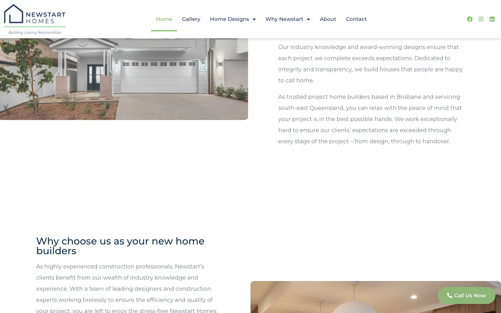
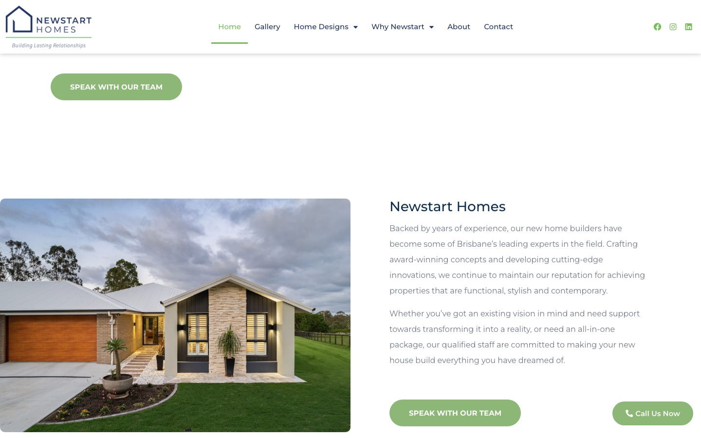
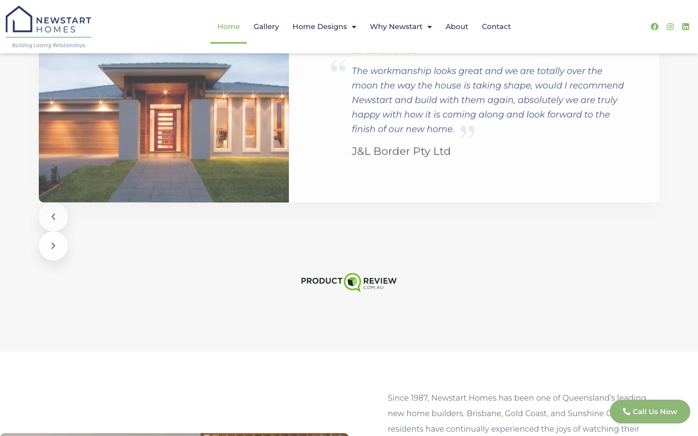

Newstart Homes is a South-East Queensland custom home builder with 30+ years of experience in fixed-price construction across Brisbane. I built their full site on WordPress, customising the Homlisti real-estate theme into a filterable home-designs platform.
The core engineering challenge: turn a catalogue of house plans into structured, filterable listings, and back it with an SEO and performance stack strong enough to pull organic traffic into direct enquiries.
The site had to serve two very different visitors from the same data: researchers needing education and trust signals, and ready buyers needing to filter specific home designs by size and style. That meant building a real listing structure — not static pages — so plans could be browsed, filtered, and expanded by the client over time.
On top of that, an image-heavy builder site has to load fast and rank locally, or it loses leads to competitors with stronger digital presence.
The deliverable wasn't just a brochure site — it was a self-serve listing platform: the client adds and filters home designs themselves, on a stack tuned to rank and convert.

Built a browsable home-designs catalogue on a custom listing post type — buyers filter house plans by size and style, each entry wired to a direct enquiry form. Catalogue logic structured for easy client expansion.

Structured the “Why Newstart” section to surface fixed-price contracts, structural warranty, and 30+ years experience exactly where hesitant buyers need reassurance — turning researchers into leads.

Implemented a performance-tuned gallery (NitroPack) for high-resolution build photography — engineering fast loads on an image-heavy page that has to sell on visual quality.